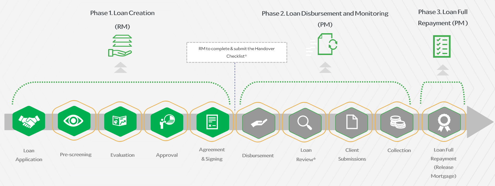

SIDF
Relationship Management · Credit
Step 4 · Lifecycle
Project Life Cycle

SIDF project lifecycle (reference).
Important note:
The process depends on the type of financing and the main two types is:
Working Capital Financing
- Focuses mainly on financial and credit analysis
- Does not require technical (PSD) or market (MSD) opinions
- Requires full evaluation
- Includes technical opinion (PSD) and market opinion (MSD) in addition to financial and credit analysis